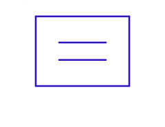
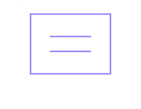

Measurements
A measurement is a named figure of merit computed from a run's results — Gain, PAE, Pout, whatever you can write as an equation over the analysis output. It draws no current and stamps nothing; it is cube algebra evaluated after the analyses finish, and its result plots like any other trace.


What a measurement is
It is the RF engineer's "equations" pane. Once your analyses have produced their result cubes, a
measurement pulls values out of them and computes a derived quantity: Gain = dB(...),
PAE = ..., Idc = DC1.I("Iout"). The result is a new cube added to the run's
measurements group, addressable by its bare name and plottable like any trace. Measurements use
the same expression language as everything else, with operands extended to
cube quantities.
Authoring — the MEAS component
Drop a MEAS component on the schematic (it is an annotation — no ports, nothing emitted to the netlist) and edit its rows, one per line, exactly like a VAR block:
Gain = dB( HB1.V("Vout", 1, All) / HB1.V("Vin", 1, All) ) dB
Pout = 0.5 * real( HB1.V[:, "Vout", 1] * conj(HB1.I[:, "Iout", 1]) ) W
PAE = 100 * (Pout - Pin) / Pdc %Each row is name = expression [unit]. Row order — and the order of multiple MEAS components —
is the declaration order the evaluator uses (so later rows can reference earlier ones). A duplicate name is a
reported conflict; the first definition wins. MEAS at the top testbench level feeds
TestBench.Measurements; a MEAS inside a sub-cell is ignored (with a warning).
Referencing analysis results (two notations)
A measurement reads an analysis by the name it appears under in the results tree
(HB1, SP1, DC1, …). There are two equivalent
notations for pulling a value out of a cube — mix them freely.
1. Accessor — name-keyed (durable)
You name the node/branch and the harmonic; remaining axes default to All (kept whole).
HB1.V("Vout") node Vout, all harmonics, all sweep points
HB1.V("Vout", 1) node Vout, fundamental, all sweep points
HB1.I("M1:d", 1, All) device-port branch current, fundamental, swept
DC1.I("Iout") no sweep → a scalarWhy use it: it is order-independent — the engine locates each axis by name, so adding or reordering sweep axes never breaks the expression. This is the right choice for measurements you author by hand and keep.
2. Bracket — positional (fast copy/paste)
One token per cube axis, in cube-axis order (numpy-style): : keeps the axis, a name or integer
fixes and drops it, a:b keeps a sub-range.
Pout_W = 0.5 * real( HB1.V[:, "Vout", 1] * conj(HB1.I[:, "Iout", 1]) )Why use it: it is exactly what the Plot Inspector's trace card writes for you. Dial in a trace, copy the shorthand string straight into a measurement, done — no remembering argument order. The catch: brackets are positional, so a later outer sweep can shift the axis a hand-edited bracket addresses.
Prefer the accessor for durable hand-authored measurements; reach for the bracket when copy-pasting from a trace you already have on screen.
S-parameters: 1-based ports
On an S-parameter cube, the i/j axes carry 1-based port numbers —
the way RF engineers name S-parameters — in both notations:
s21 = SP1.S(2, 1) S21 over frequency
s21_db = dB( SP1.S[:, 2, 1] ) S21, freq kept (:), ports fixed
s11 = SP1.S[:, 1, 1] S11SP1.S[:, 2, 1] is S21, not "row 2 column 1 by zero-based index." A port
outside 1..nPorts is a clear error listing the available ports.
Composition & scope
Measurements are evaluated in declaration order, and each is in scope by name for the ones after it — so a
complex figure of merit builds from intermediates. Also in scope: every global VAR
variable (by name). The element-wise helpers conj, real, imag,
mag, phase, dB, dB10, dBm, log10,
ln broadcast over cubes. Referencing an unknown analysis raises an error naming the available
ones; a failing measurement is reported as a run note and does not fail the whole run.
Swept variables
A global variable that is also a parametric-sweep axis is injected as a 1-D cube (one
element per sweep point) rather than a scalar — so Pin_avail = Pin over a 10-point
Pin sweep yields a 10-element curve. Its axis matches the swept analysis's axis, so it
broadcast-aligns: Gain = dB(HB1.V("out",1,All)) - Pin resolves element-wise. A non-swept global
stays a scalar.
See also: Expressions (the language) ·
MEAS component · Plot types. Full design:
docs/design/measurements.md.